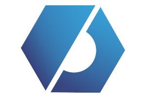

04 — CERTIFICACIONES
Formación certificada
Official Certificate
Evolución continua respaldo oficial.
Idiomas, cloud, Salesforce y SAP: acreditaciones que respaldan mis conocimientos y amplían mi visión técnica en diferentes entornos.
FCE B2 First - EN
Cambridge University P&A · 2025

DELF B1 - FR
France Éducation Int. · 2022
SAP Conceptos e Iniciación
Logali Group · 2025

Servicios en la Nube (Cloud y AWS)
Inaem Orienta Aragón · 2025